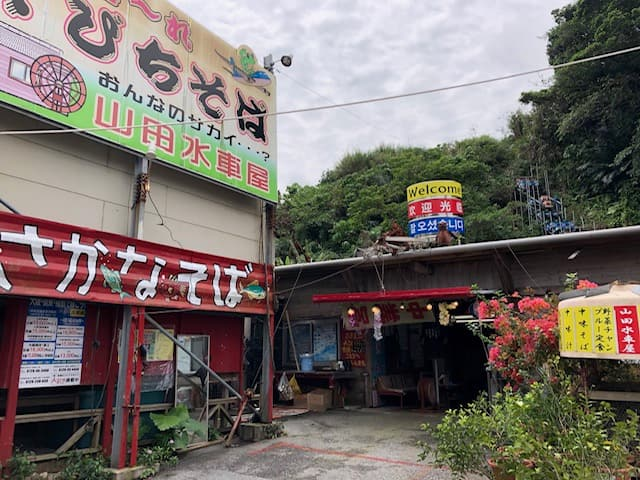
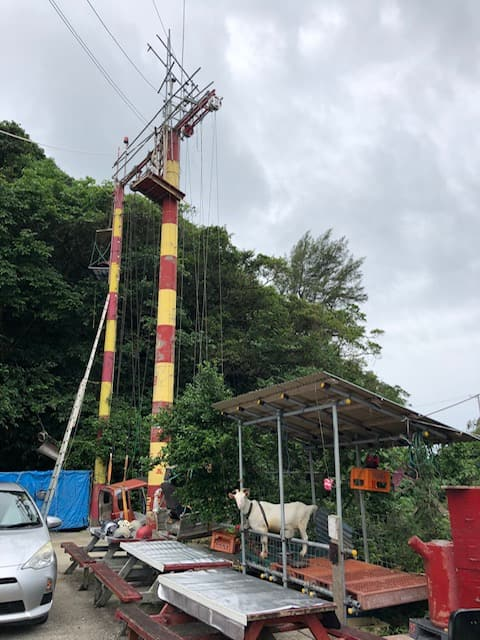
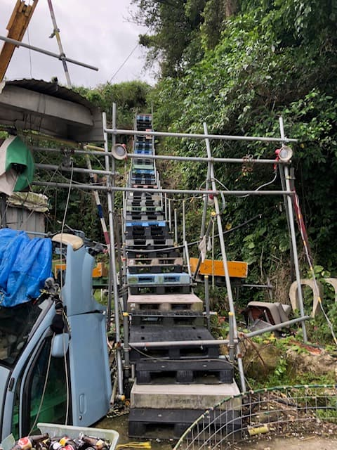
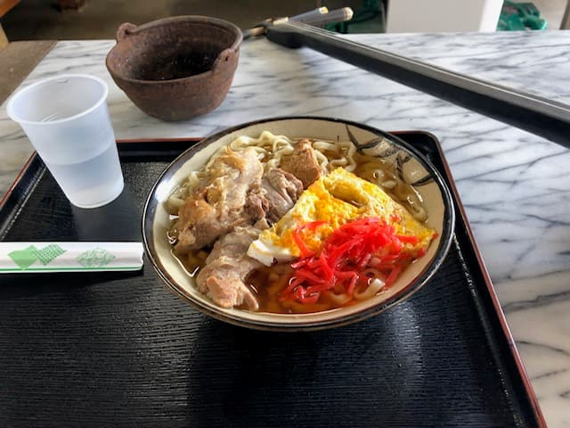

2021년 4월에 먹었습니다😄
주) 안타깝게도 현재 이 가게는 폐업했습니다. 기록으로 남겨 둡니다.




점장님이 추천해 주신 '스이샤 소바'를 주문. 가쓰오 육수가 잘 우러난 국물에 가는 곱슬면. 평범하게 맛있었고 가격도 합리적이었습니다.
평가(9점/15점): 평범하게 맛있었지만, 폐업하게 되어 아쉽습니다. 제가 먹을 때 다른 관광객과 점장님이 즐겁게 대화하시던 모습이 인상에 남아 있습니다. 가게 안에는 수제로 만든 '코로나 살균 장치?' 같은 것도 분명 있었던 기억인데, 꽤 독특한 가게였네요😁
면: ★★★☆☆（3）
수프: ★★★☆☆（3）
토핑: ★★★☆☆（3）